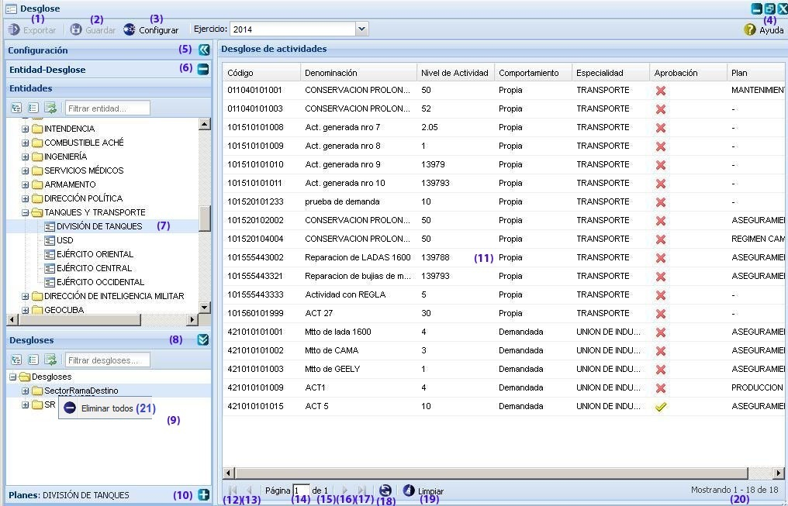
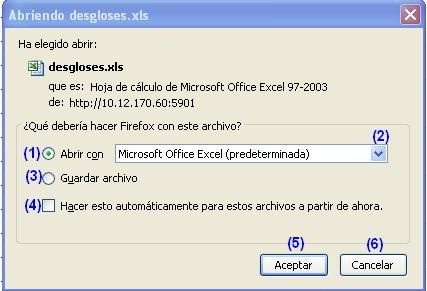
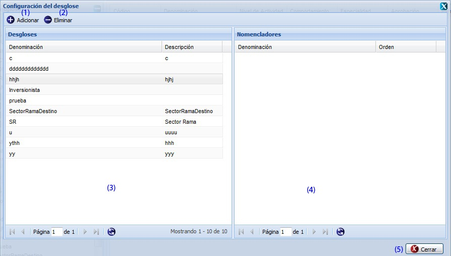
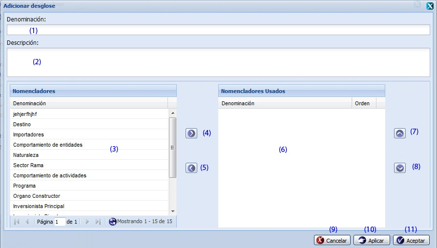

--Desglose--
Esta funcionalidad permite desglosar los niveles de actividad asignados a las actividades por conceptos previamente configurados por el usuario. En el caso de las FAR el desglose configurado es Sector-Rama-Destino. Para acceder a esta funcionalidad se selecciona Inicio\Planificación material\Bases para el plan\Desglose.
Una vez seleccionada esta funcionalidad, se mostrará en pantalla la interfaz de la misma, donde el usuario podrá realizar todas las acciones a las que tenga acceso, ver figura 1. Las operaciones que se pueden realizar con esta funcionalidad están señaladas con números mostrándose el orden y la posición que ocupa cada uno de las acciones que se ejecutan.

Figura 1. Interfaz Desglose.
Las diferentes opciones que conforman la figura anterior permiten:
- Exportar los desgloses de niveles de actividad. Ver Exportar desgloses.
- Guardar el desglose.
- Configurar desgloses, ver Configurar desgloses.
- Mostrar la ayuda de la funcionalidad. Se puede acceder a esta funcionalidad de manera rápida con la combinación de las teclas (Alt + H).
- A través de un clic izquierdo permite ocultar el panel Configuración.
- A través de un clic izquierdo permite minimizar el panel Entidad-Desglose.
- Lista de entidades.
- A través de un clic izquierdo permite ocultar el panel Desgloses.
- Lista de desgloses.
- A través de un clic izquierdo permite maximizar el panel Planes.
- Lista de actividades de la entidad seleccionada.
- Ir a la primera página, mostrando las primeras actividades.
- Ir a la página anterior.
- Muestra el número de la página donde se encuentra, se puede introducir el número.
- Muestra el número máximo de páginas.
- Ir a la siguiente página.
- Ir a la última página.
- Actualizar el listado de actividades.
- Limpiar filtro(s). Esta acción limpiará todos los criterios de búsqueda, deshabilitando los filtros realizados. Se puede realizar esta operación seleccionando la combinación de teclas (Alt + L).
- Mostrar la cantidad de resultados encontrados.
- Eliminar todos los desgloses, el sistema mostrará un mensaje de confirmación, que se puede Aceptar o Cancelar según desee, de presionar el botón Aceptar el sistema mostrará un mensaje de información notificando que se realizó la operación con éxito, si presiona el botón Cancelar el sistema cancela la acción.
Nota: el campo de ejercicio que aparece en la parte superior de la interfaz, permite cambiar de Ejercicio. Inicialmente todas las operaciones realizadas en la interfaz, se efectuarán sobre el ejercicio actual, de querer efectuar los desgloses sobre un ejercicio diferente al actual, se procede a desglosar dicho campo y seleccionar uno de los ejercicios listados. Automáticamente el sistema recargará el panel Desglose de actividades con cada una de las actividades correspondientes al ejercicio seleccionado.
Exportar desgloses
Esta funcionalidad permite exportar desgloses de una determinada entidad, para exportar los mismos se procederá de igual forma como se explica en el listado de opciones de la siguiente figura.

Figura 2. Abriendo desgloses.xls.
Las diferentes opciones que conforman la figura anterior permiten:
- Abrir un documento con los desgloses pertenecientes a la entidad seleccionada.
- Seleccionar formato en que desea guardar o visualizar el documento.
- Guardar archivo en la carpeta Descargas.
- Ejecutar las opciones (1) o (3) sin mostrar la ventana cada vez que se invoque a la funcionalidad.
- Ejecutar la acción según la opción seleccionada.
- Cancelar las acciones y salir de la interfaz sin realizar ninguna operación.
Nota: para ejecutar la funcionalidad se debe desglosar el árbol de entidades y seleccionar una entidad de las que se listan, luego de seleccionada la misma se recargará automáticamente el panel derecho Desglose de actividades y el panel inferior Desgloses, se desglosa el árbol mostrado en dicho panel y se selecciona uno de los desgloses mostrados, recargando así el panel derecho Desglose de actividades, activando de esta forma la opción Exportar.
Configurar desglose
Para configurar un desglose se debe seleccionar la opción Configurar, opción (3) de la figura 1. Una vez seleccionada la misma, el sistema le mostrará la siguiente interfaz, ver figura 3.
Nota: La opción Configurar solo se habilitará si el usuario autenticado es una entidad rectora.

Figura 3. Configuración del desglose.
Las diferentes opciones que conforman la figura anterior permiten:
- Adicionar configuración de desglose, ver Adicionar configuración de desglose, esta opción permite adicionar un nuevo desglose.
- Eliminar configuración de desgloses, se debe seleccionar un desglose de la lista de Desgloses, se presiona la opción Eliminar, el sistema mostrará un mensaje de confirmación, que se puede Aceptar o Cancelar según desee, si se presiona el botón Aceptar del mensaje de confirmación el sistema muestra un mensaje de información notificando que se realizó la operación con éxito, si se cancela el mensaje no se elimina el desglose y el sistema vuelve a la ventana Configuración del desglose.
- Lista de desgloses.
- Lista de Nomencladores asociados al desglose seleccionado.
- Permite cerrar la ventana Configuración del desglose y volver a la interfaz principal.
Adicionar configuración de desglose
Se selecciona la opción Adicionar configuración de desglose de la figura 3, el sistema le mostrará la ventana que aparece a continuación, ver figura 4.

Figura 4. Interfaz Adicionar desglose.
Las diferentes opciones que conforman la figura anterior permiten:
- Introducir la denominación del desglose que se quiere adicionar.
- Introducir la descripción del desglose.
- Seleccionar un nomenclador de la lista de nomencladores.
- Enviar el nomenclador al panel Nomencladores usados.
- Devolver el nomenclador a su lugar.
- Listar los nomencladores que fueron enviados al panel Nomencladores usados.
- Si hay más de un nomenclador en el panel Nomencladores usados puede poner el nomenclador en un orden superior, presionando dicha opción.
- Si hay más de un nomenclador en el panel Nomencladores usados puede poner el nomenclador en un orden inferior presionando dicha opción.
- Cancelar las acciones y salir de la interfaz sin guardar los datos.
- Guardar los datos y limpiar los campos de la interfaz, permitiendo adicionar otro desglose.
- Adicionar los desgloses y cerrar la interfaz.
Buscar desgloses
Esta funcionalidad permite efectuar una búsqueda mediante filtrado en las columnas. Para efectuar la misma debe estar en el panel Desglose de actividades, ver figura 1. Una vez que accedió a esta se presiona clic en el botón “ ” que aparece en la parte derecha de cada columna. Luego de presionado el mismo, se procede a desplegar la columna y se ofrece la posibilidad de realizar búsqueda mediante filtrado. Se introduce o selecciona el criterio de filtrado según la información que brinde la columna seleccionada. Inmediatamente se presiona la tecla Enter y el sistema le mostrará en la interfaz las Desglose de actividades según el criterio de filtrado seleccionado. En caso de que no existan datos a mostrar para el criterio de filtrado seleccionado el sistema lo notificará mostrando el mensaje de información: “No existen datos que se correspondan con el criterio de búsqueda especificados.”.
” que aparece en la parte derecha de cada columna. Luego de presionado el mismo, se procede a desplegar la columna y se ofrece la posibilidad de realizar búsqueda mediante filtrado. Se introduce o selecciona el criterio de filtrado según la información que brinde la columna seleccionada. Inmediatamente se presiona la tecla Enter y el sistema le mostrará en la interfaz las Desglose de actividades según el criterio de filtrado seleccionado. En caso de que no existan datos a mostrar para el criterio de filtrado seleccionado el sistema lo notificará mostrando el mensaje de información: “No existen datos que se correspondan con el criterio de búsqueda especificados.”.